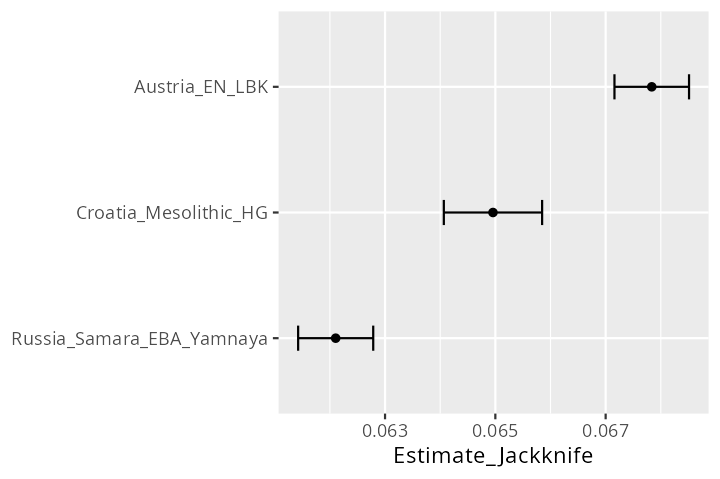

# download the current stable release binary
wget https://github.com/poseidon-framework/poseidon-analysis-hs/releases/latest/download/xerxes-Linux
# rename it to simply xerxes
mv xerxes-Linux xerxes
# make it executable
chmod +x xerxes
# run it to test if it is working
./xerxes -hF-statistics with Poseidon packages
Understanding sample positions in PCA-, spatial- and temporal space are fundamentals of any archaeogenetic research project. But so are also various other methods for data exploration and statistical inference. For F-statistics Poseidon features the dedicated xerxes software tool.
Installing xerxes
We can install xerxes just as trident and qjanno (there is no windows version, though):
xerxes also supports some other experimental features, but only its implementation of F-statistics is stable right now.
Calculating F-statistics with xerxes
For the ice mummy we previously concluded from the PCA plot, that it seems to feature an ancestry profile not unlike the of what we can observe for present day Sardinians. It plots far closer to them than for example to modern-day English reference genomes. xerxes allows us to test this specific comparison with a test encoded as F4(<Chimp.REF>,<ice>,Sardinian,French) vs. F4(<Chimp.REF>,<ice>,English,French), so \(\textrm{F4}(\textrm{Chimp},\textrm{Ice mummy};\textrm{Sardinian},\textrm{French})\) vs. \(\textrm{F4}(\textrm{Chimp},\textrm{Ice mummy};\textrm{English},\textrm{French})\).
# download the Reference_Genomes package for the Chimp genome
trident fetch -d refData -f "*Reference_Genomes*"
# run the two F4 tests
xerxes fstats -d refData -d ice \
--stat 'F4(<Chimp.REF>,<ice>,Sardinian,French)' \
--stat 'F4(<Chimp.REF>,<ice>,English,French)'
Note
xerxes uses stream-processing to read samples from different Poseidon packages simultaneously and with small memory footprint.
This command line interface is suitable for a small set of targeted tests. For bigger test series where we want to explore large sets of permutations among the individuals and populations of interest xerxes features a powerful .yml based configuration file format.
fstats:
- type: F4
a: ["<Chimp.REF>"]
b: ["<Iceman.SG>"]
c: ["English", "Sardinian"]
d: ["French"]xerxes fstats -d ref_data \
--statConfig f4.config
Note
This config file format allows to define groups dynamically with a simple selection syntax. This includes both positive and negative selection
groupDefs:
FR: ["French", "French.SDG", "-<French23812>", "-<French23830>"]
EN: ["English", "-<HG00131>"]
fstats:
- type: F4
a: ["<Chimp.REF>"]
b: ["<Iceman.SG>"]
c: ["EN", "Sardinian"]
d: ["FR"]It also allow to list multiple different statistics in the fstats block, which will then all be calculated in one xerxes run.
The F4 test shown here is not particular interesting though - we typically want to dive much deeper and beyond modern reference genomes. One relevant question for for an ancient sample from Western Eurasia may be, to which major ancestry components it has the strongest affinities: Western Hunter-Gatherer ancestry, Ancient Near-Eastern ancestry or Steppe ancestry.
Each of these components is represented by multiple ancient reference genomes, each in turn grouped into populations by their shared origin in space, time and by the archaeological material they are associated with. Here we run one possible outgroup-F3 test with three individual reference populations1.
# download the various packages that include samples for the desired
# reference genomes
trident fetch -d refData \
-f "Austria_EN_LBK, Croatia_Mesolithic_HG, Russia_Samara_EBA_Yamnaya, Mbuti.DG"
# run three F3 tests
xerxes fstats -d refData -d ice \
--stat 'F3(<ice>,Austria_EN_LBK,Mbuti.DG)' \
--stat 'F3(<ice>,Croatia_Mesolithic_HG,Mbuti.DG)' \
--stat 'F3(<ice>,Russia_Samara_EBA_Yamnaya,Mbuti.DG)' \
-f outgroupF3.tsvHere we wrote the results to an output file, which we can read into R to visualize the relevant estimates.
library(magrittr)
library(ggplot2)
outgroup_f3 <- readr::read_tsv("scratch/outgroupF3.tsv")
p <- outgroup_f3 %>%
ggplot() +
geom_point(aes(x = b, y = Estimate_Jackknife)) +
geom_errorbar(
aes(
x = b,
ymin = Estimate_Jackknife - StdErr_Jackknife,
ymax = Estimate_Jackknife + StdErr_Jackknife
), width = 0.2
) +
coord_flip() +
scale_x_discrete(limits = rev) +
theme(axis.title.y = element_blank())
Learn more about…
- F-statistics and how to use xerxes: Introduction to F3- and F4-Statistics
xerxes’ algorithms and implementation details: xerxes Whitepaper
References
Wang, Ke, Kay Prüfer, Ben Krause-Kyora, Ainash Childebayeva, Verena J. Schuenemann, Valentina Coia, Frank Maixner, Albert Zink, Stephan Schiffels, and Johannes Krause. 2023. “High-Coverage Genome of the Tyrolean Iceman Reveals Unusually High Anatolian Farmer Ancestry.” Cell Genomics 3 (9): 100377. https://doi.org/10.1016/j.xgen.2023.100377.